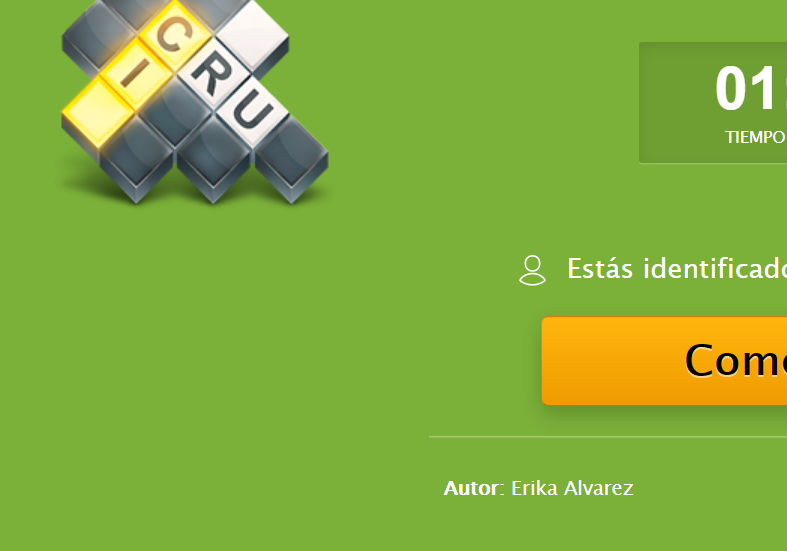
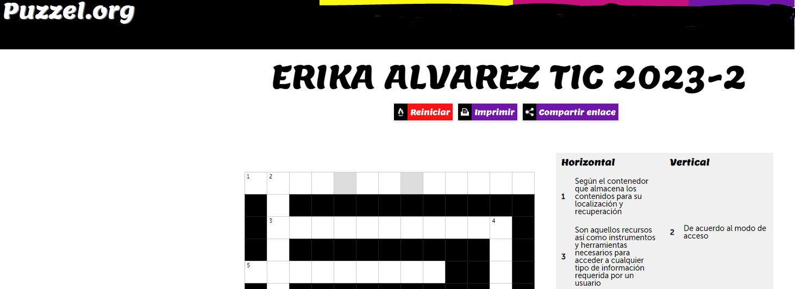

Participar de manera individual en el Foro sobre los conceptos relacionados con el tema “Tipos de fuentes disponibles en la Web para hacer investigación".
INSTRUCCIONES PARA PARTICIPAR
1. Seleccionar en forma individual, al menos 20 conceptos sobre los temas vistos como Lectura Previa al Foro: la clasificación de fuentes de información, ejemplos de fuentes, recomendaciones para seleccionarlas y sobre el concepto plagio. Para cada uno de los conceptos elegidos deben considerar una descripción breve sobre él. Tomen en consideración toda la información localizada como Lectura Previa de este objeto de aprendizaje, incluyendo la información de los enlaces que se asignaron, así como el documento sobre plagio.
2. Con los conceptos y su definición, generar un crucigrama por medio de alguna APP como Educaplay, Kubbu, Puzzle.org u otra herramienta interactiva de su preferencia. Se debe cumplir con lo siguiente:
- El crucigrama debe contener al menos 20 conceptos. Cada estudiante seleccionará los conceptos que integrarán su crucigrama. No pueden presentarse dos crucigramas idénticos entre los estudiantes. Deberán considerarse conceptos de todas las referencias proporcionadas. Cuidar la ortografía en la redacción de los conceptos.
3. Una vez diseñado el crucigrama, deberán compartir a través del Foro, el enlace a él, para que puedan tener acceso todos los participantes del curso. Favor de especificar al subir el enlace si han considerado espacios o no hay espacio entre palabras, acentos, todo mayúsculas, todo minúsculas, mayúscula la primera palabra, u otra consideración que es necesario conocer para dar respuesta a su crucigrama.
4. Posterior a ello, cada estudiante debe resolver en forma individual, el crucigrama generado por alguno de sus compañeros y enviar la evidencia en formato imagen (imagen del crucigrama resuelto) por medio del correo de la plataforma, dirigido solamente al autor de ese crucigrama y a la facilitadora del curso. NOTA Importante: Para que sea válida esta evidencia, debe tener más del 60% de las respuestas correctas sin pedir pistas al sistema.
.
RÚBRICA DE EVALUACIÓN
- Diseño del crucigrama con 20 conceptos (0.40 c/concepto=8 puntos). Es obligatorio que al abrir el crucigrama se identifique el nombre de su autor. Por ejemplo:
 
- Resolver crucigrama de otro compañero y enviar evidencia al correo de la plataforma (2 puntos). Se considera siempre y cuando se obtengan más de 12 aciertos.
.